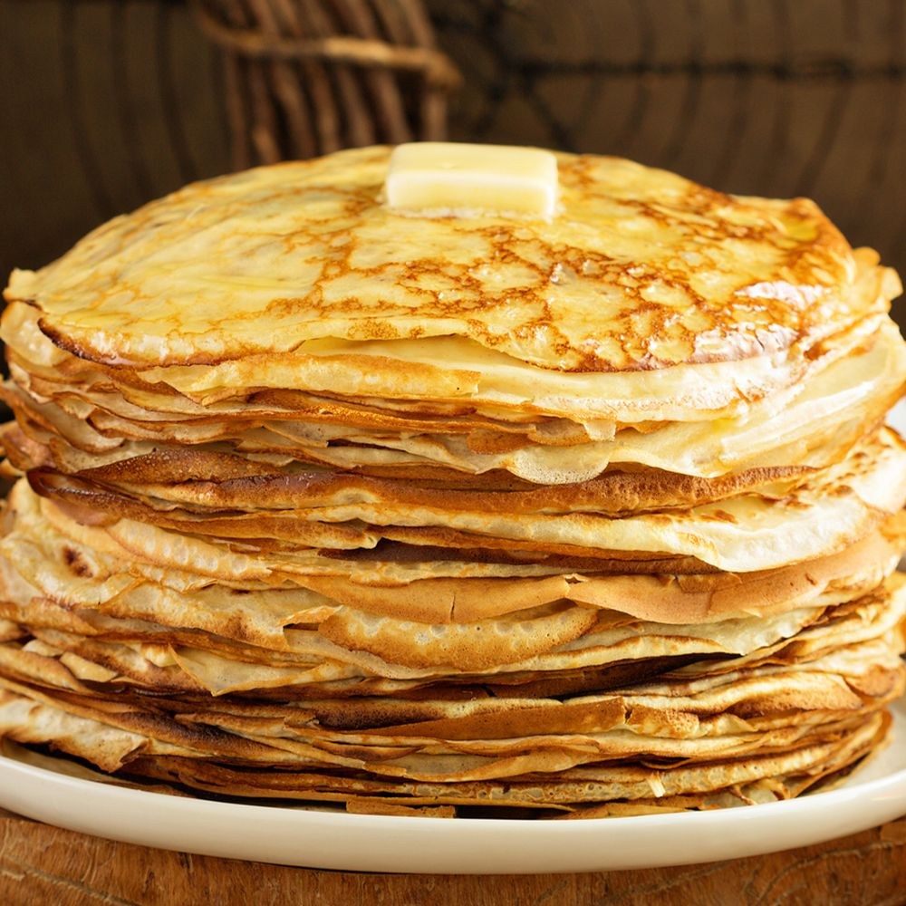

Thin Pancakes

Description
Super easy thin pancakes. Very crepe like. Great with bananas.
Ingredients
- 100g (1/2 cup) plain flour
- 2 eggs
- 300ml (1 1/4 cups) milk
- 1 tbsp vegetable/ sunflower oil
- Pinch of salt
Steps
- Put flour and salt into a large mixing bowl
- Make a well in the centre and crack 2 eggs into the well
- Pour in the oil and about 50ml of the 300ml of milk then start whisking from the centre, gradually drawing the flour into the eggs, milk and oil. Once all the flour is incorporated, beat until you have a smooth, thick paste.
- Add a good splash of milk and whisk to loosen the thick batter. While still whisking, pour in a steady stream of the remaining milk. Continue pouring and whisking until you have a batter that is the consistency of slightly thick single cream.
- Heat a pan over a moderate heat, then wipe it with an oiled paper towel.
- Ladle some batter into the pan, tilting the pan to move the mixture around for a thin and even layer.
- Leave to cook, undisturbed, for about 30 secs. If the pan is the right temperature, the pancake should turn golden underneath after about 30 secs and will be ready to turn.
- Ease a palette knife under the pancake, then quickly lift and flip it over. Make sure the pancake is lying flat against the base of the pan with no folds, then cook for another 30 secs before turning out onto a warm plate or into the oven to keep warm.